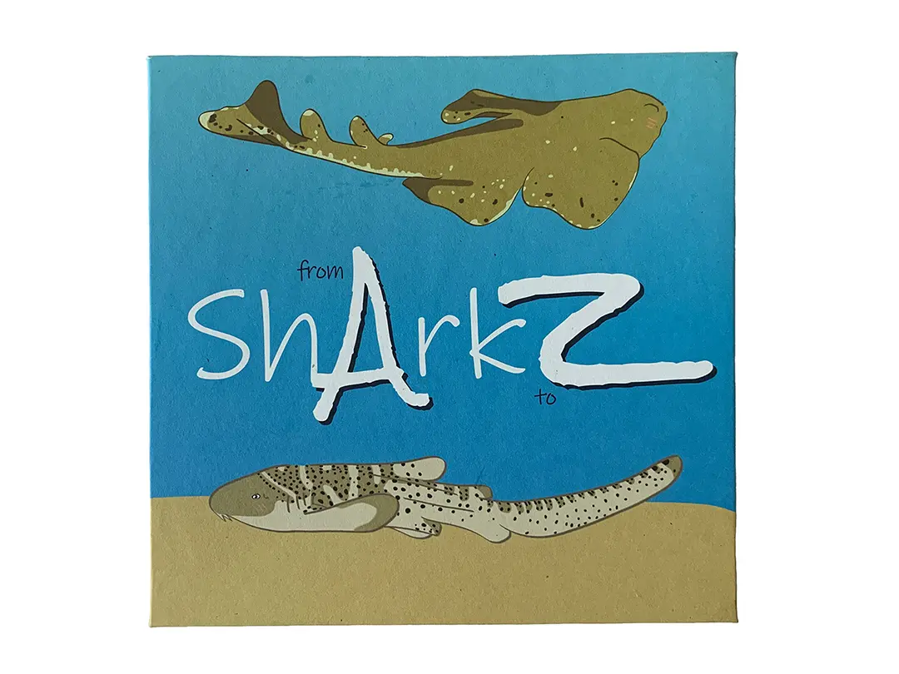
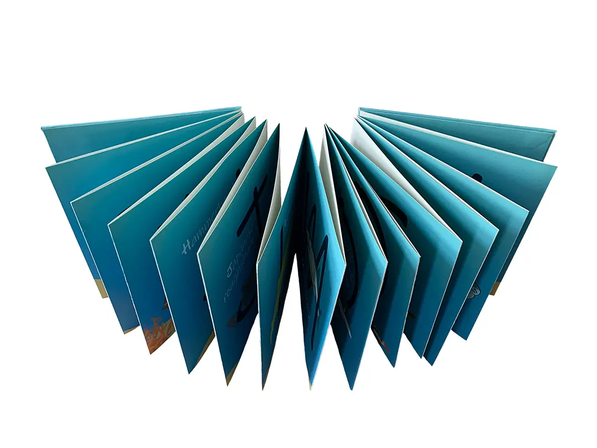
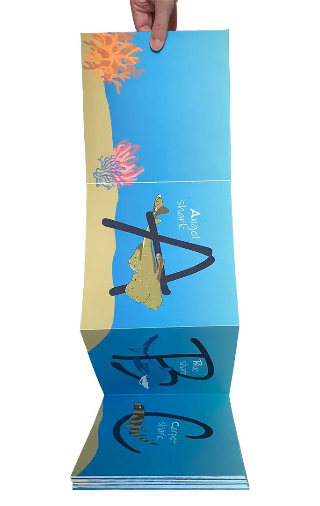

Sharkz (from A to Z)



I love sharks. My favorite shark, you ask? Blue shark. People are often surprised when I tell them there are over 500 species of shark, so I made this accordian alphabet book to enlighten you to a few. I had to get a little creative for a couple of letters, but I'm okay with bending the rules for such a cool animal.
I have plenty more shark projects that aren't on this website, so feel free to check them out on my instagram.